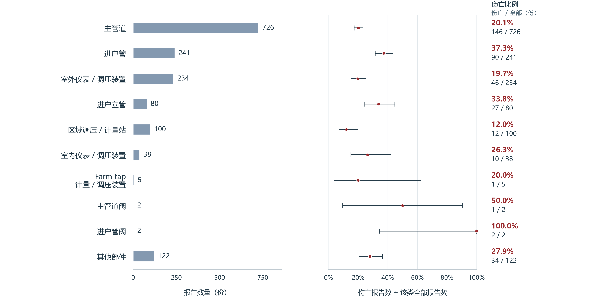
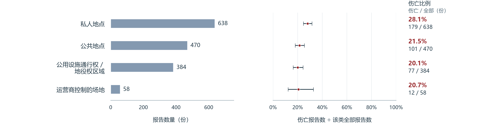

1．资料来源与清洗
我们从美国交通部（DOT）的官方数据目录下载配气事故原始文件及字段说明。配气系统负责向街区和用户供应燃气。事故由燃气企业报送，美国管道与危险品安全管理局（PHMSA）汇集公布。本次下载的文件包含 1,550 份报告，记录事故的部件、材料、地点和后果，事故发生于 2010 年 1 月 3 日至 2026 年 2 月 10 日。
比较事故后果，需要数清每类有多少份报告，其中多少份伴随伤亡。这里将记录了至少一人死亡或因伤住院的报告称为“伤亡报告”；同一份报告即使有多人伤亡，也只计一份。PHMSA 的伤害统计要求伤者入院并至少住一晚。伤害定义
重复记录、类别缺失或人数填错，都会影响计数。我们先核对报告编号、部件、材料、地点和伤亡记录，再整理日期和文本格式。报告编号没有重复，三项分类与伤亡标记均无空白；需要处理或核实的情况如下。
| 原始资料中的情况 | 怎样处理 | 处理后的结果 |
|---|---|---|
| 人员分项有空白 | 填报者选择“无死亡”或“无因伤住院”后，可以跳过相应人数。核对人数时，仅在标记为“无”、分项没有正数时按零求和 | 原始空白保留；全部伤亡标记、总人数和人员分项一致 |
| 44 份报告的材料填为“未知” | 保留“材料未知”类别，参加材料比较 | 44 份均保留，其中 10 份有伤亡 |
| 两份报告的运营商和事故时间相同 | 阅读事故经过，确认分别发生在 White Sulphur Springs 和 Elkview，设施也不同 | 两份均保留 |
| 日期为月／日／年格式，161 份报告的事故年与收件年不同 | 保留原日期，另存标准日期；事故年与收件年分别记录 | 全部日期可读取，每份报告同时保留发生年与收件年 |
| 5,475 个单元格的文本外有一对引号 | 去掉外层引号，保留内部文字 | 部件、材料、地点和伤亡标记均不受影响 |
清洗前后都是 1,550 份报告、369 份伤亡报告。其余 1,181 份未记录死亡或上述因伤住院。实际转换了日期和文本格式，增加了计算所需的日期和伤亡指标；部件、材料和地点各类的报告数与伤亡数均未改变。清洗前后对照
我们还直接读取原件，另按死亡和因伤住院总人数判断有无伤亡。逐类重新计数，结果一致。
2．研究背景与目的
燃气公司的检查和换管预算有限，需要决定先关注哪些设施。我们希望用历史事故和管网资料，为选择检查重点提供依据。
判断检查重点，需要同时考虑一类管道出事有多频繁，以及出事后有多少事故造成死亡或因伤住院。事故报告记录伤亡后果，PHMSA 的年度管网资料记录不同材料的铺设规模。后续将匹配两类资料，比较相同管道里程下的事故频率。
主管道沿道路和街区输送燃气，进户管连接主管道与用户。两类管道承担不同的供气任务，是我们最先比较的对象。
主管道与进户管
进户管直接连接用户，因此我们首先检验一个预期：进户管事故比主管道事故更常伴随伤亡。随后比较不同材料和地点的伤亡比例，寻找值得重点复盘的设施与场所。
3．基础比较
我们分别按部件、材料和地点统计报告。各类报告数量不同，因此同时比较伤亡报告数和伤亡比例。比例按以下方式计算：
伤亡比例＝伤亡报告数 ÷ 该类全部报告数 × 100%。
进户管与主管道
主管道共有 726 份报告，其中 146 份伴随伤亡，占 20.1%；进户管共有 241 份报告，其中 90 份伴随伤亡，占 37.3%。主管道的伤亡报告数更多，进户管的伤亡比例更高，两类比例相差 17.2 个百分点。
部件：报告数量与伤亡比例

Wilson 区间：比例估计有多精确
是什么。 Wilson 置信区间用来表示比例估计的不确定性。材料图和地点图用横线表示区间；横线越宽，现有记录给出的估计越不精确。本章采用 95% 的置信水平。
为什么用。 各类报告数量相差很大，也有 0% 和 100% 的伤亡比例。Wilson 方法在记录很少或比例处于这两个极端时，仍能给出有宽度、且位于 0% 至 100% 内的区间。方法依据
怎样计算。 对每一类，取全部报告数 n 和伤亡报告数 k，计算比例 k／n，再求 Wilson 上下限。进户管的 k＝90、n＝241，伤亡比例为 37.3%，95% 区间为 31.5% 至 43.6%。进户管阀的两份报告都有伤亡，观察比例为 100%，对应区间为 34.2% 至 100%。
计算公式
记 p＝k／n，95% 置信水平对应 z＝1.96。将每类的 k、n 代入下式，“−”给出下限，“＋”给出上限；计算结果乘以 100% 转为百分比。
95% 描述的是区间计算方法的长期覆盖目标：反复收集同等规模的独立报告、按同样方法计算，约 95% 的区间应包含同类已报告事故的真实伤亡比例。这里按各份报告相互独立近似计算。
材料的伤亡比例与报告数量
为了寻找值得重点检查的设施，我们继续比较涉事材料。铸铁／锻铁组有 60 份报告，其中 22 份伴随伤亡，比例为 36.7%，高于塑料组的 26.6% 和钢组的 22.4%。图中同时展示报告数量与比例区间，便于判断这些比较分别有多少记录支持。
材料：报告数量与伤亡比例

这些事故涉及管道、阀门和表具，材料按发生事故的部件统计。球墨铸铁在原始表中另有分类，我们沿用原分类，将四份报告单独统计；其他材料和材料未知也保留在图中。
不同地点的伤亡比例
私人地点指私人产权范围，公共地点包括道路等公共区域。按这两类区域比较，私人地点组的伤亡比例为 28.1%，公共地点组为 21.5%，相差 6.6 个百分点。资料还单列公用设施通行权／地役权区域和运营商控制的场地。
地点：报告数量与伤亡比例

主要观察在三个资料范围中保持一致
我们分别用三组资料复算：主版本中标为 FINAL 的 1,382 份报告、明确为天然气的 1,464 份报告，以及后来保存的 1,592 份完整报告版本。三次比较中，进户管的伤亡比例均高于主管道，铸铁／锻铁均高于塑料和钢，私人地点均高于公共地点。FINAL 是填报状态，后续仍可修订。复算计数
后续分析
本章比较了十余年报告中的总体差异。下一步先按收件年分为 2010—2021 年与 2022 年起两期，检查进户管与主管道的差异、铸铁／锻铁的近期表现，并计算比例差和关联检验。随后将事故报告与相同年份、部件、材料的管网里程匹配，比较相同里程下的事故频率。PHMSA 年度资料
基本资料的判断能力也需检验。我们将用较早报告建立常数概率、部件规则和逻辑回归三种方法，只根据部件、材料等特征判断较晚报告有无伤亡，再与实际结果核对。事故频率与伤亡后果共同用于讨论检查重点；具体换管安排还要结合设施状况和成本。
资料与计算说明
本章使用 2026 年 11 月 7 日从 DOT 指定附件重新取得的固定文件。原件有 1,550 份报告、468 个字段；分析表保留 15 个原始字段，并增加 5 个日期或伤亡指标。报告收件日期为 2010 年 2 月 19 日至 2026 年 2 月 18 日。事故发生年与收件年分别保存，后续分期使用收件年。原始文件下载
计数、比例和 Wilson 区间由 Python 计算。三项分类的结果均与逐份报告分析表核对一致。交互图使用本地 ECharts，全部 21 类均保留；打印和 PDF 下载使用 Seaborn／Matplotlib 原生导出。Wilson 区间以 statsmodels 的同名方法复核。当前比较描述已报告事故的后果，管网每里程事故频率另用年度资料计算。
本章的 Wilson 区间按报告相互独立近似计算，未计入同一运营商多次报告的相关性。组间比例差的检验在后续分期分析中完成。
DOT 目录标注公开访问，未列明许可名称。以下资料可用于复核本章结果。